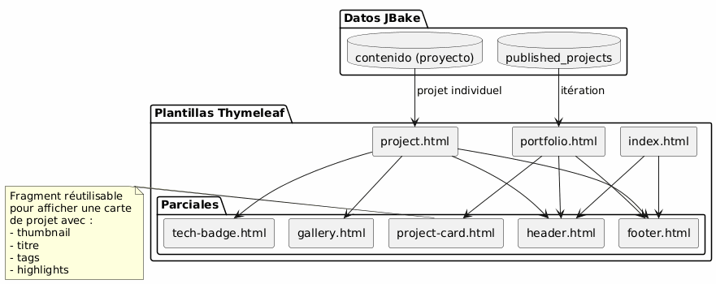
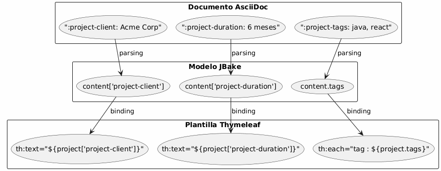
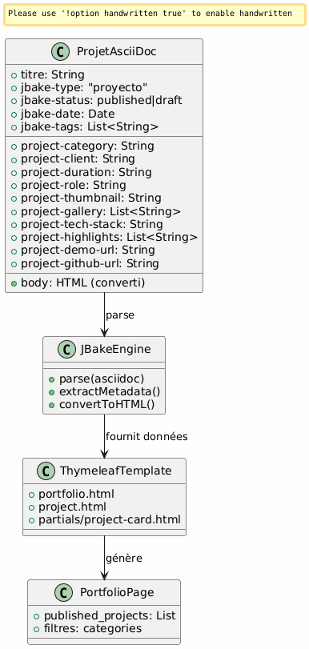
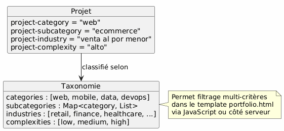

Portafolio de arquitectura JBake - Visión y casos de uso
Publié le 15 January 2026
Visión Arquitectónica
Principio director
La arquitectura se basa en el principio de separación de preocupaciones :
-
Contenido : archivos AsciiDoc estructurados con metadatos ricos
-
Presentación : plantillas Thymeleaf reutilizables
-
Datos : modelo extraído automáticamente por JBake desde los atributos AsciiDoc
-
Estilo: Bootstrap 5 para la coherencia visual
Elección estratégica: AsciiDoc para el portafolio
| Criterio | Ventaja |
|---|---|
Coherencia |
Mismo formato que los artículos de blog |
Metadatos |
Atributos estructurados y extensibles ( |
mantenibilidad |
Edición simple en texto, versionable Git |
Flexibilidad |
Puede contener contenido rico (tablas, código, imágenes) |
Plantillado |
JBake extrae automáticamente los atributos para Thymeleaf |
Modelo de datos
Cada proyecto portfolio es un documento AsciiDoc:
-
Metadatos de encabezado : información estructurada (cliente, duración, tecnologías, etc.)
-
Cuerpo del documento : descripción narrativa, desafíos, soluciones, resultados
-
Atributos personalizados : prefijados`project-*`para la extracción automática
Casos de uso detallados
UC1 : Añadir un elemento al portafolio
Flujo nominal
Failed to generate image: PlantUML preprocessing failed: [From <input> (line 4) ] @startuml skinparam backgroundColor #FEFEFE actor Développeur as dev participant "Editor ^^^^^ Syntax Error? (Assumed diagram type: sequence) @startuml skinparam backgroundColor #FEFEFE actor Développeur as dev participant "Editor Texto" as editor participant "Archivo\nAsciiDoc" as file participant "JBake\nMotor" as jbake participant "Sitio\nEstatico" as site dev -> editor : Créer nouveau fichier activate editor editor -> file : portfolio/nouveau-projet.adoc activate file dev -> editor : Rédiger en-tête avec métadonnées\n(titre, type=project, status=published,\nattributs project-*) dev -> editor : Rédiger contenu narratif\n(contexte, défis, solutions) dev -> editor : Ajouter images dans assets/img/portfolio/ editor -> file : Sauvegarder deactivate editor dev -> jbake : Lancer build (jbake -b) activate jbake jbake -> file : Lire et parser jbake -> jbake : Extraire métadonnées jbake -> jbake : Convertir AsciiDoc → HTML jbake -> jbake : Appliquer template project.html jbake -> jbake : Ajouter à la liste portfolio.html jbake -> site : Générer pages statiques deactivate jbake dev -> site : Vérifier résultat activate site site --> dev : Afficher projet deactivate site @enduml
Plantilla del archivo a crear
El desarrollador crea`content/portfolio/nom-projet.adoc`con una estructura estandarizada:
-
Encabezado con todos los atributos requeridos
-
Secciones normalizadas (Contexto, Desafíos, Soluciones, Resultados)
-
Nomenclatura coherente de las imágenes
Puntos de validación
-
Los atributos obligatorios están presentes(
jbake-type,jbake-status,project-thumbnail) -
Las imágenes referenciadas existen en`assets/img/portfolio/`
-
La compilación de JBake se ejecuta sin errores
-
El proyecto aparece en la página portfolio
-
La página individual del proyecto se muestra correctamente
UC2 : Eliminar un elemento del portafolio
Flujo nominal
Failed to generate image: PlantUML preprocessing failed: [From <input> (line 5) ] @startuml skinparam backgroundColor #FEFEFE actor Développeur as dev participant "Sistema\nArchivos" as fs participant "JBake ^^^^^ Syntax Error? (Assumed diagram type: sequence) @startuml skinparam backgroundColor #FEFEFE actor Développeur as dev participant "Sistema\nArchivos" as fs participant "JBake Motor" as jbake participant "Sitio\nEstático" as site database "Cache JBake" as cache dev -> fs : Supprimer portfolio/projet-ancien.adoc activate fs fs --> dev : Fichier supprimé deactivate fs dev -> fs : (Optionnel) Supprimer images associées\nassets/img/portfolio/projet-ancien-* activate fs fs --> dev : Images supprimées deactivate fs dev -> cache : Nettoyer cache JBake activate cache cache --> dev : Cache vidé deactivate cache dev -> jbake : Rebuild complet (jbake -b) activate jbake jbake -> jbake : Scanner content/portfolio/ jbake -> jbake : Projet absent → non généré jbake -> jbake : Régénérer portfolio.html\n(sans le projet supprimé) jbake -> site : Déployer nouveau build deactivate jbake dev -> site : Vérifier activate site site --> dev : Projet absent de la liste deactivate site @enduml
Estrategia alternativa: archivado
En lugar de eliminar definitivamente, posibilidad de crear una carpeta`content/portfolio/archive/`:
-
Mover el archivo en lugar de eliminarlo
-
Permite restaurar fácilmente
-
Mantén el historial de Git más claro
Limpieza de recursos
-
Comprobar las imágenes huérfanas en`assets/img/portfolio/`
-
Eliminar las imágenes no referenciadas por otros proyectos
-
Limpiar el caché de JBake para evitar referencias fantasma
UC3: Establecer como no publicado (borrador)
flujo nominal
Failed to generate image: PlantUML preprocessing failed: [From <input> (line 6) ] @startuml skinparam backgroundColor #FEFEFE actor Développeur as dev participant "Archivo\nAsciiDoc" as file participant "JBake\nMotor" as jbake participant "Sitio ^^^^^ Syntax Error? (Assumed diagram type: sequence) @startuml skinparam backgroundColor #FEFEFE actor Développeur as dev participant "Archivo\nAsciiDoc" as file participant "JBake\nMotor" as jbake participant "Sitio Estatico" as site dev -> file : Ouvrir portfolio/projet.adoc activate file dev -> file : Modifier attribut\n:jbake-status: published\n↓\n:jbake-status: draft file --> dev : Sauvegardé deactivate file dev -> jbake : Rebuild (jbake -b) activate jbake jbake -> file : Parser le fichier jbake -> jbake : Détecter status=draft jbake -> jbake : Exclure de published_projects jbake -> jbake : Ne pas créer page publique note right Le projet existe toujours mais n'est pas publié end note jbake -> site : Générer site (sans ce projet) deactivate jbake dev -> site : Vérifier portfolio activate site site --> dev : Projet absent de la liste publique deactivate site @enduml
Estados posibles

Casos de uso típicos
-
Proyecto en curso de redacción : crear en borrador, publicar cuando esté listo
-
Proyecto confidencial temporalmente : pasar a borrador mientras se llega al acuerdo con el cliente
-
Actualización importante: pasar a borrador, modificar, republicar
-
A/B testing : duplicar en borrador, probar, publicar la mejor versión
Arquitectura de plantillas
Estrategia de plantillas reutilizables

Pattern de extracción de datos
JBake transforma automáticamente los atributos de AsciiDoc en propiedades accesibles en Thymeleaf :

Convenciones de nomenclatura
-
Atributos del proyecto : prefijo`project-*` (ex:
project-client,project-tech-stack) -
Archivos : kebab-case (ej:`ecommerce-platform.adoc`)
-
Imágenes : prefijo nombre-proyecto (ej:`ecommerce-platform-thumb.jpg`)
-
Plantillas : nombre funcional (ej:)
project-card.html,tech-badge.html)
Flujo de publicación
Pipeline de desarrollo

entornos
| Entorno | Uso | Estado aceptado |
|---|---|---|
Local |
Desarrollo y preview |
borrador, publicado |
puesta en escena |
Validación de preproducción |
publicado únicamente |
Producción |
Sitio público |
publicado únicamente |
Extensibilidad
Agregado de nuevos atributos
Para enriquecer el modelo de datos, simplemente agregar nuevos atributos prefijados`project-*` :
-
project-awards: Premios y reconocimientos -
`project-testimonial`Citación del cliente
-
`project-team-size`Tamaño del equipo
-
`project-budget-range`Rango presupuestario
Estos atributos se vuelven automáticamente disponibles en las plantillas sin modificar el motor JBake.
Categorización avanzada

Buenas Prácticas
Organización de los archivos
-
Archivo = proyecto : evitar mezclar varios proyectos
-
Imágenes en carpeta dedicada
assets/img/portfolio/nom-projet/ -
Nomenclatura coherente : facilita la búsqueda y el mantenimiento
-
Versioning Git : seguimiento completo de las modificaciones
Gestión del contenido
-
Estado borrador por defecto: publicar solo cuando esté listo
-
revisión antes de la publicación: validación de calidad y confidencialidad
-
Metadatos completos : completar todos los campos pertinentes
-
Contenido narrativo rico: no limitarse a los metadatos
Rendimiento
-
Optimizar imágenes : compresión antes del commit
-
Paginación si es necesario : si >20 proyectos
-
Carga diferida : imágenes de las galerías cargadas bajo demanda
-
Caché del navegador: encabezados adecuados para activos
Conclusión
Esta arquitectura permite:
-
Facilidad de uso: agregar un proyecto = crear un archivo de texto
-
Flexibilidad : extensible mediante nuevos atributos
-
Mantenibilidad : separación contenido/presentación
-
Trazabilidad : control de versiones Git completo
-
Automatización : build y despliegue continuo posibles
La elección de AsciiDoc garantiza la coherencia con el resto del sitio mientras ofrece la riqueza de los metadatos necesarios para un portafolio profesional.